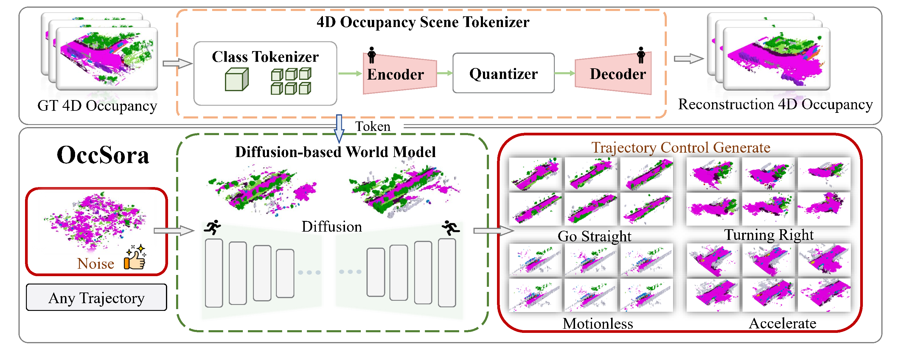
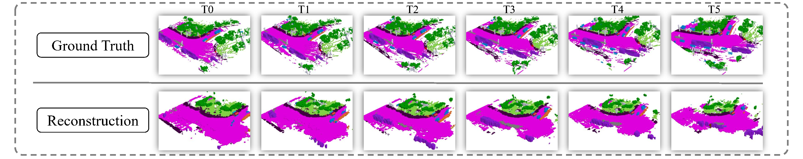

OccSora: 4D Occupancy Generation Models as
World Simulators for Autonomous Driving

The pipeline of OccSora. The 4D occupancy scene tokenizer achieves compression and restoration of real information. The compressed information and vehicle trajectories are simultaneously used as inputs for the diffusion-based world model, generating trajectory-controllable tokens that are decoded into 4D occupancy.
The structure of the 4D occupancy scene tokenizer. The proposed method encodes and compresses 4D scenes to extract high-dimensional features, which are then decoded to retrieve the spatiotemporal physical characteristics of the scenes.
The structure of the diffusion-based world model. The model involves utilizing the optimal codebook obtained from training the 4D occupancy scene tokenizer to convert 4D occupancy into a sequence of tokens. These tokens, along with the ego vehicle trajectory and random noise, are then combined as input for denoising training to acquire the generated token.

@article{
}